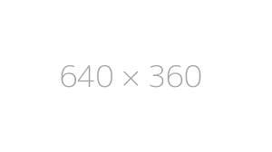
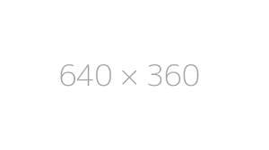

Computer Engineering
Table of Contents
Job Description
Duties
Requirments
Research Outcome
Works Cited
Bibliography
No.
No.
No.
No.
No.
Job Description
Job Description
In computer engineering, a person will write out lines of code within a "langauge". A computer language is computed down to an integer value of 1 and 0. Computer engineers don't only work with software(code), but also with the hardware(computer's processors, cores, ect...). Having a knowledge of how computers read information given to them allows for the process to display the images on the screen, This works together with the display to create an interface.
Duties
Computer Engineering has multiple different fields, so every job requires a different set of knowledge. System computing is for backend programming, which allows for information to be stored, edited, and pushed to be able to create a visual effect on the display. Frontend programming is designed to create a nicer enviorment for the user to be able to understand. This is used in video games and web development, however, it is normally used less than backend programming.Programming is about a lot of problem solving in a certain period of time.
Duties Analysis
Normally the short amount of time given for a specific task to be completed is harsh. This is not traditionally an issue that computer engineers face. Computer engineers often face errors that occur after writing the program. Problem solving is used both in debugging and in creating the base idea of what was required to be made.I am very good at problem solving, at a considerably fast speed. This allows for very little time spent on debugging and more time spent on meeting the requirments that are given for the specific task.
Skill/Qualities
There are a couple different skills that you need to become a computer engineer. You need critical thinking to be able to identify the problem and use reasoning to be able to solve the problem. Active listening is also needed as you need to be able to listen to what the company/employer wants. You also need to be able to understand the system to create a correct program to have top preformance.
Skill/Qualities Analysis
This career requires you to almost be able to figure out what you need to do to create the desired user interface. I can explain how the computer unmderstands the information, as well as explain how positioning, orientation, and content works. However, that is not to say that there is no "bugs". All bugs are solved with critical thinking. I already know how to solve most bugs by this method. Meaning that this is not an issue either. Top preformance is needed when a system cannot handle what is being displayed. I do know of very simple ways in which to reduce this lag to a minimum, so the program will always run at a consistent speed.
Education/Training Requirements
A bachelors degree in computer engineering or other simular subjects is required. Usually required for people take courses in computer languages, such as Java, C++, or Objective-C.
Education/Training Requirments Analysis
I am motivated to meet the cricumstances, as I already love programming Challenges that come from it would give me fun. However, it may be a bit to simple...
Best Schools
 Research still needed...
Research still needed...
Best Schools Analysis
Content still needs to be researched.
Salary
Lower annual wage: $70,000
Median annual wage: $121,000
Maximum annual wage: $221,000
Salary Analysis
This salary is more than enough to live a lifestyle I want.Honestly, I want to become a CEO, and an inventor, however I need enough money to make that happen. Working this job with account of investments, should be enough money to make these goals happen.
Projected Growth
Content needed...
Projected Growth Analysis
Content needed...
Overall Benefit to Self and Others
Content needed...
Research Outcome
Works Cited
Bibliography
 
